Glo
Glo is a destination for skincare enthusiasts to connect and share knowledge.

>Role
- Researcher
- Designer
- Client Liaison
Deliverables
- User Surveys
- Competitive Analysis
- Personas
- User Stories
- User Flows
- Content Strategy
- Sketches
- Wireframes
- User Tests
- Style Guide
- Hi-Fi Prototype
Tools
- Year: 2019
The Problem
Glo was created to solve problems. Namely, these problems are:
- I’m new to skincare, and I don’t know where to start
- How can I trust if products really do what they say they do?
- I love skincare, and I’d love one platform where I can learn more about it
The Solution
Glo is a destination for skincare enthusiast to connect and share knowledge. As it is not connected to any skincare brand or cosmetic company, it is impartial. This fosters a sense of trust as well as community between users.

The Process
Glo grew from a very broad client request. Initially we were approached by our client who wanted to develop a cloud storage and organisation app. While there are many big players in this field, the client believed there was scope for a new product if it met the needs of a particular audience. The client wanted the app to offer various features (saving online content, organising content, creating content and uploading content) as well as a collaboration/sharing aspect. I was involved as the designer for this project, and worked on it from start to finish.
As we moved through the design process we realised that a traditional cloud storage service was not ideal, as the market is saturated. So we turned our attention to niche markets, the problems they presented that needed solutions.
Competitive Analysis
The research process began with competitive analysis. As we were still considering traditional cloud storage, we analysed Pinterest, Google Drive and Dropbox.
The analysis made it clear that the traditional cloud storage market is a tough one to break into. From this point, the focus moved from traditional cloud storage to trying to identify a niche market.
Following discussions with the client, skincare emerged as a particular interest, and one which we examined further in the next step.


User Research
Having defined the scope slightly through competitive analysis, it was now time to learn about the users. A survey was compiled via Google Forms, and disseminated to various individuals. Users were asked about their cloud storage habits, as well as their interest in a potential skincare app.
User Personas


User research helped us learn more about our users, but in order to help avoid scope creep and assist with further development, it was crucial to create user personas.
Four personas were crafted, each focused on a different facet of the skincare app.
User Stories
Having gathered the research and crafted the personas, the next step was to identify the user stories and prioritise them. This allowed us to ensure we were at the very least developing a MVP (minimally viable product).
User Flows
Furthering the information architecture process, user flows were mapped out for the high priority user stories. While mapping these flows some medium priority stories came to be included as well. The user flows were crucial for the next step - wireframing.

Wireframes
With the user flows in hand we started on the wireframes. We created a series of screens for each high priority user story.
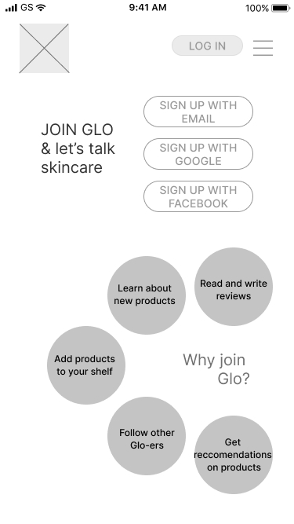 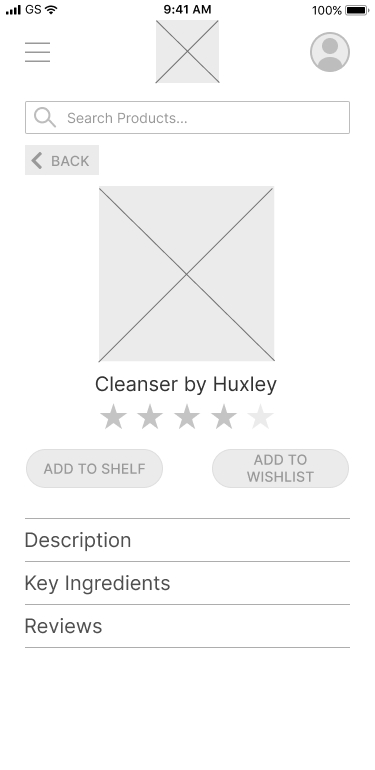Branding
While usability testing on the wireframes was carried out, the work started on developing the brand. This encompassed the app name, colours, logo and look & feel. We started with the brand emotions. With these identified we were able to move forward with a mood board, and logo iterations.
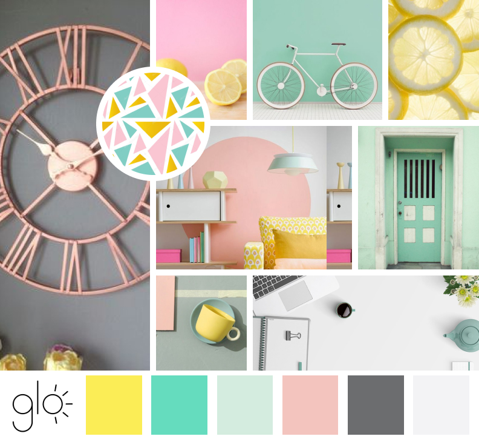Hi-Fi Mockups
With wireframes created and a style guide to refer to for design decisions, we could move onto the high fidelity mockups. Preference testing was also conducted during the design process. We tested preferences on the homepage design, the dashboard and the product listing. Once the final iterations were submitted and approved, we performed further usability testing.
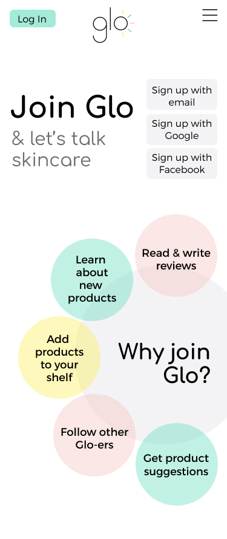 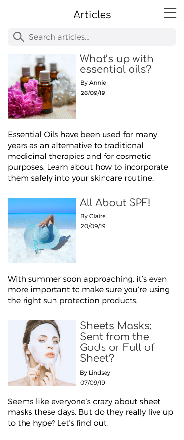Prototyping
Clickable prototypes offers us two benefits: firstly, we can test the app with users, and secondly, it allows us to check that all the required steps are present for tasks to be performed.
User Testing
During initial wireframe testing users struggled to complete one task - Adding a product to their shelf. Changes were made to the design, and this task was tested once more with the hi-fi mockups.
With the changes in place, users had no problem completing the task.
 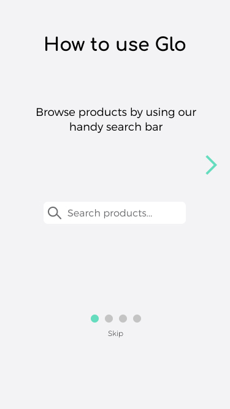
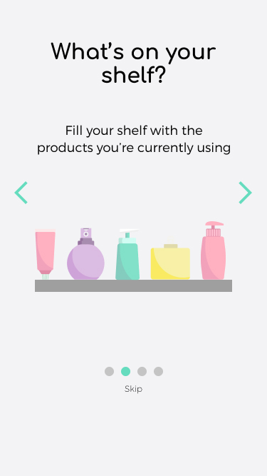
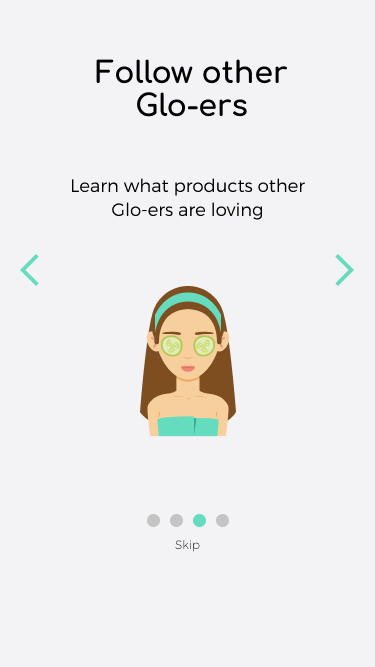
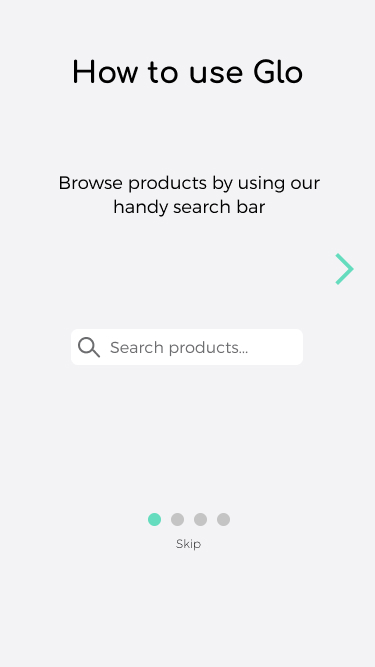
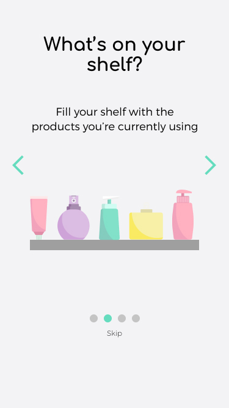
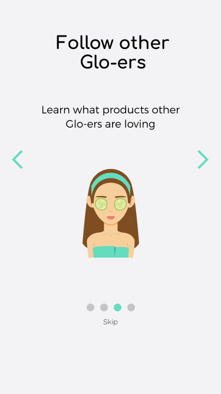

Conclusion
Looking at the final prototype, we can state that the problems we were confronted with have been solved. Glo is an elegant solution, one that meets the client brief and also has room for growth in the future. An e-commerce aspect should be investigated, as it could be a source for potential earnings.